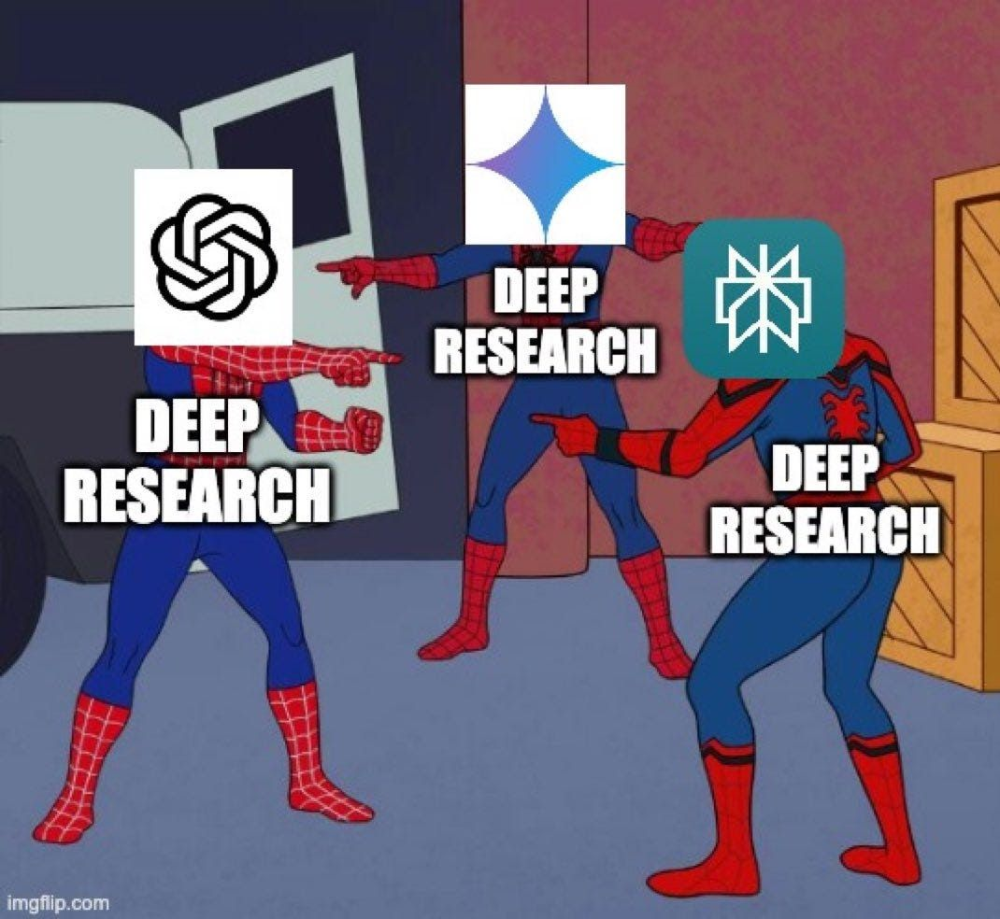

רוב המחקרים שכלי Chat AI יוצרים? הם לא באמת מחקרים
פורסם במקור ב LinkedIn
רוב המחקרים שכלי Chat AI יוצרים? הם לא באמת מחקרים
כולם מדברים על מחקר בעזרת AI, אבל בפועל? רוב הצ'אטים פשוט שולפים מידע, מסכמים אותו יפה - וזהו.
אבל מה אם בינה מלאכותית לא רק הייתה מחפשת תשובות, אלא באמת חוקרת, שואלת, מאתגרת ומצליבה מקורות עד שהיא בטוחה באמת?
היחיד שמפתיע ביכולות שלו זה כלי מהפכני בשם GenSpark -
במקום מודל אחד שמחזיר תשובות, הם בנו צוות שלם של חוקרים דיגיטליים (AI Agents) שכל אחד מהם מבצע תפקיד אחר:
🔍 תכנון חכם – מודלים שמגדירים את שלבי המחקר, שואלים את השאלות הנכונות ומחפשים מידע ממאות מקורות.
🧐 ביקורת וניתוח – המידע לא מתקבל כמובן מאליו. המודלים מחפשים פערים, אי-דיוקים וסתירות.
⚡ אתגור מסקנות – צוות מיוחד של מודלים נכנס לתמונה כדי לערער על הממצאים ולהביא זוויות חדשות.
🔁 שיפור מתמיד – המחקר חוזר על עצמו עד שכל תובנה אומתה מכל כיוון אפשרי.
הם משתמשים באוסף מודלים של AI בשביל לחקור, להצליב את המידע, ולתחקר אותו (לשאול שאלות על התוכן שחזר), ולהגיש לכם את כל הטוב הזה במתנה ובלי מאמץ מצדכם.
💡 כשהמחקר באמת מעמיק - התשובות נראות אחרת:
התוצאה היא מאמרים עם פי 2-3 יותר מקורות, רמת עומק שאין באף כלי אחר, וניתוח שלא עוצר בתשובות קלות.
האם זה העתיד של מחקר מעמיק? או שעדיין נצטרך את המגע האנושי? 👇
